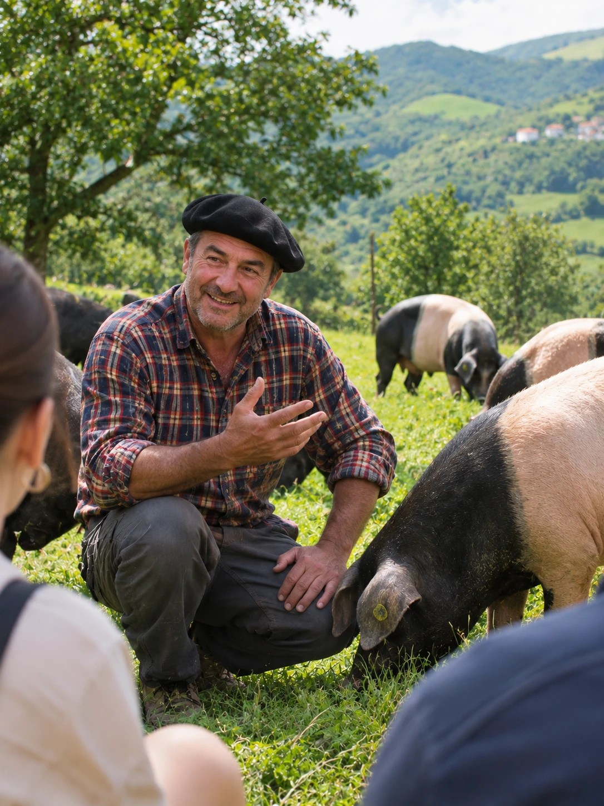
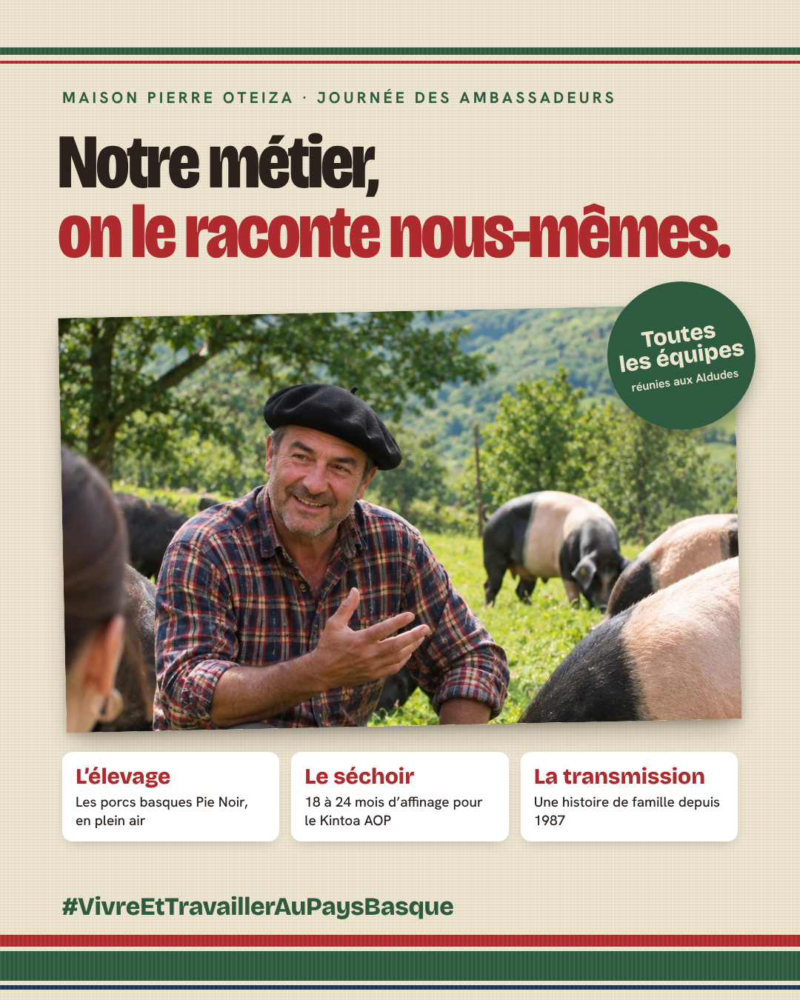

Maison Pierre Oteiza · Journée des Ambassadeurs
Notre métier,
on le raconte nous-mêmes.

Toutes
les équipes
réunies aux Aldudes
L’élevage
Les porcs basques Pie Noir, en plein air
Le séchoir
18 à 24 mois d’affinage pour le Kintoa AOP
La transmission
Une histoire de famille depuis 1987
#VivreEtTravaillerAuPaysBasque
ME
Maddi Etxeberri
Conseillère de vente · Maison Pierre Oteiza, boutique de Bayonne

Aperçu du post (maquette)
J’aime
Commenter
Republier
Envoyer